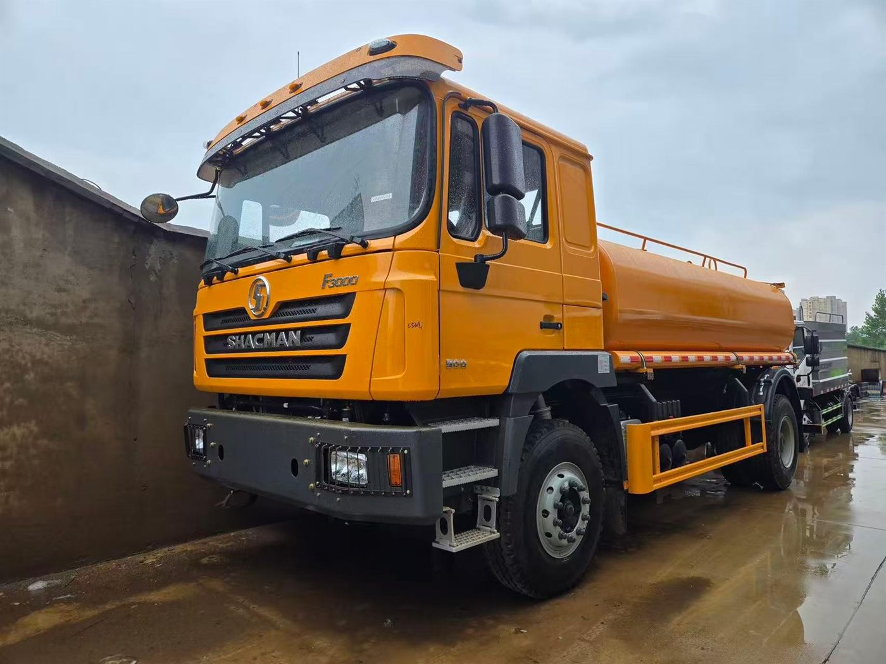
SHACMAN · F3000 · FUEL TANKER
SHACMAN F3000 Fuel Tanker Truck: Export Checklist Before Quotation
Use real fuel tanker photos to prepare a clearer enquiry before asking for price, delivery and shipping options.
Read guideReal vehicle photos, verified specifications and practical selection guidance for overseas truck dealers, fleets, contractors and project buyers.
Fresh SHACMAN and SAGMOTO articles built from real vehicle and loading photos, focused on truck configuration, quotation details and overseas procurement questions.

Use real fuel tanker photos to prepare a clearer enquiry before asking for price, delivery and shipping options.
Read guideFor general cargo and project transport buyers, the right cargo truck starts with load, route and body design.
Read guide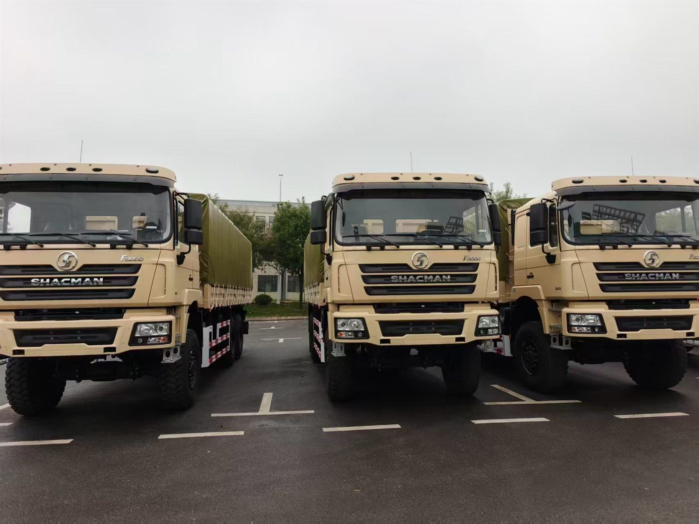
A 6x6 cargo truck can be valuable for remote sites, but the buyer must confirm route, load and maintenance conditions first.
Read guide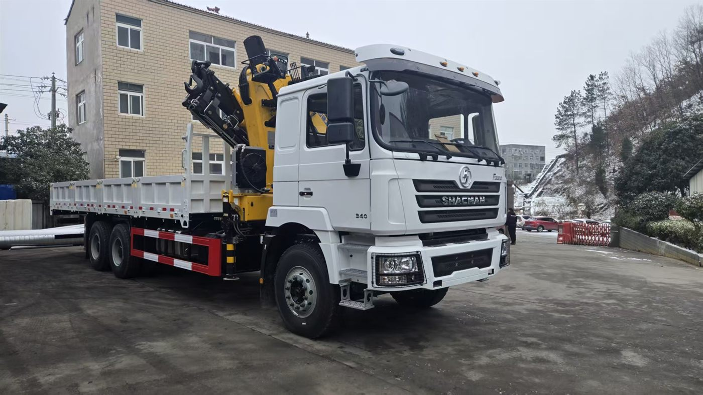
Crane truck buyers need to match chassis, crane capacity and cargo body instead of selecting the crane alone.
Read guide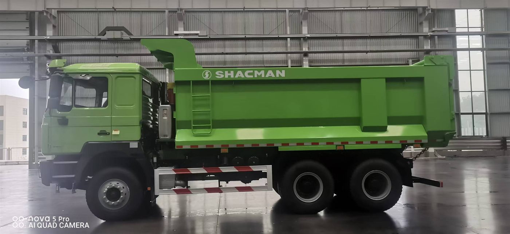
U-shape dump bodies can improve unloading for many materials, but the final choice depends on cargo and route.
Read guide
For overseas procurement, real process photos can help buyers verify that the order is moving from production to shipment.
Read guide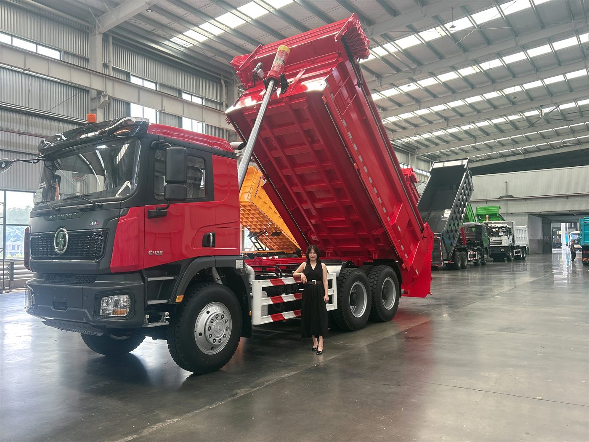
For Latin America and other non-European markets, the X1s 6x4 can be discussed as a practical dump truck option.
Read guide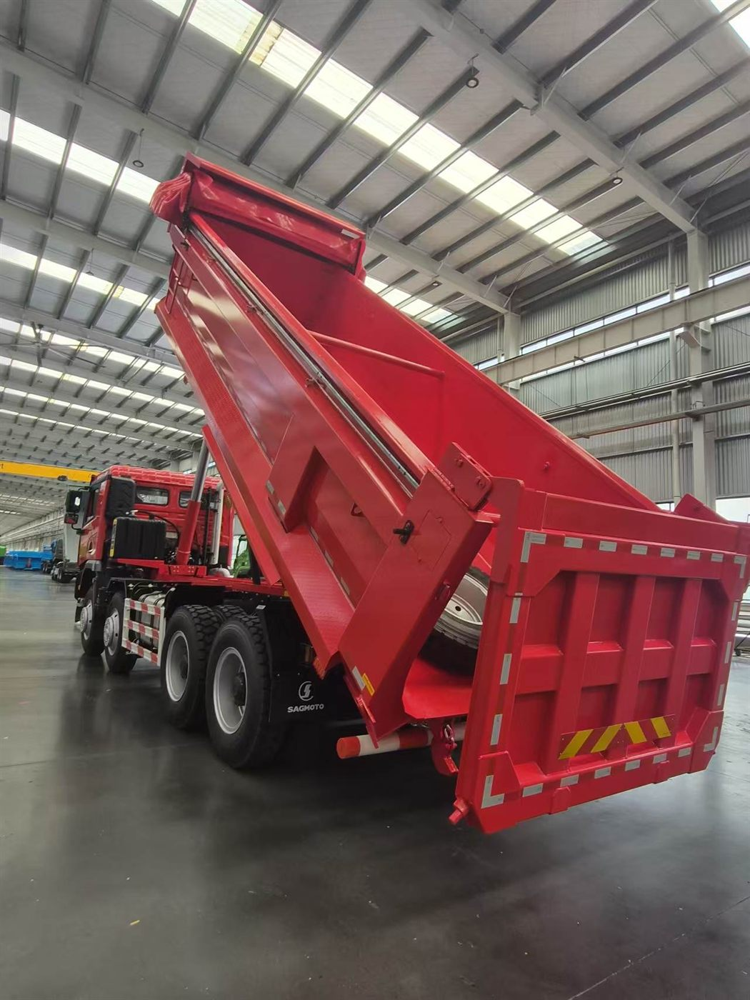
The X1s 8x4 is a heavier-duty enquiry option where payload, route and axle rules need careful checking.
Read guide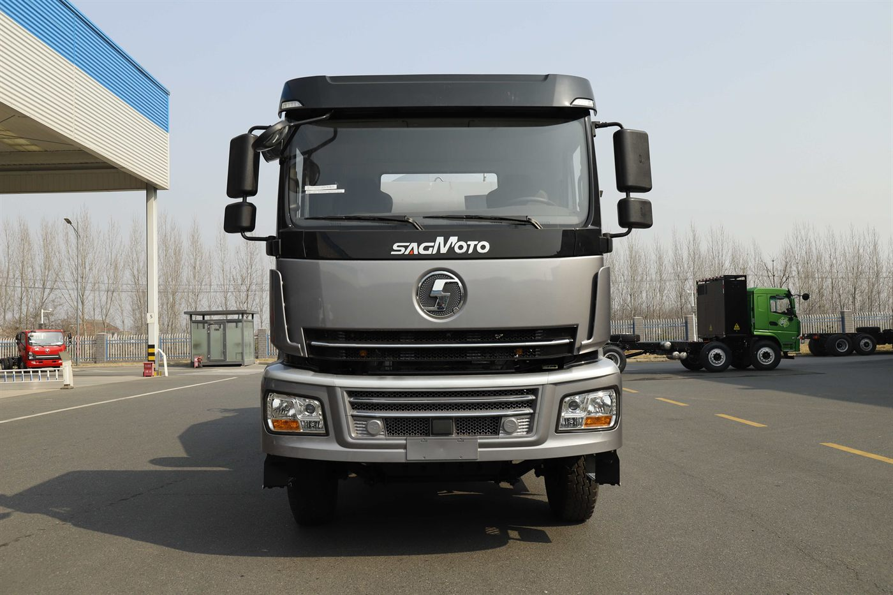
Ready-mix fleets should match drum size, chassis and route before asking for final price.
Read guide
Water trucks are strong enquiry products when buyers clearly define tank volume and spray equipment.
Read guideA practical guide to matching a reinforced rectangular dump body to the cargo, route and loading method.
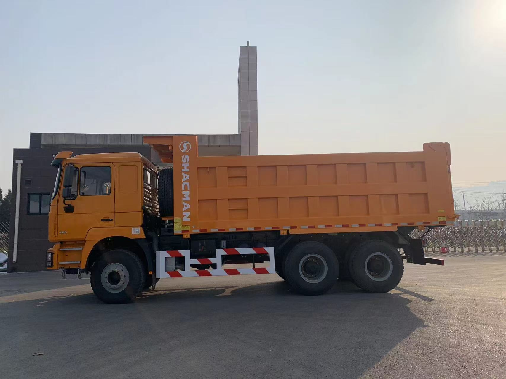
Real vehicle photos and a practical checklist covering cargo, body dimensions, steel, hoist, tailgate and pre-shipment inspection.
Read article
Verified specifications, real photos and a practical Spanish checklist before import.
Leer artículo
Real photos and a verified review of the Cummins M13, FAST transmission and 7.4 m U-shaped body.
Leer artículoA practical Spanish comparison for buyers in the Dominican Republic, Costa Rica and Latin America.
Read articleCountry-focused answers for buyers comparing configurations, duty cycles and import requirements.
Guía del volquete SAGMOTO X1S 6x4 de 420 HP para República Dominicana: ficha verificada, caja en U, rutas, carga y datos para cotizar.
Read guide
Análisis del SAGMOTO X1S 8x4 de 520 HP para Perú: tren motriz verificado, caja en U y comprobaciones para minería y construcción.
Read guide
Cómo evaluar el SAGMOTO X1S 8x4 de 520 HP para Ecuador según carga, pendientes, rutas, caja, pesos por eje y requisitos de importación.
Read guide
Guía práctica del SAGMOTO X1S 8x4 de 520 HP para contratistas en Colombia: rutas, materiales, caja, operación y datos de cotización.
Read guide
Evaluate a SHACMAN X3000 6x4 430 HP dump truck for Tajikistan with verified reference specs, mountain-route questions and quotation inputs.
Read guide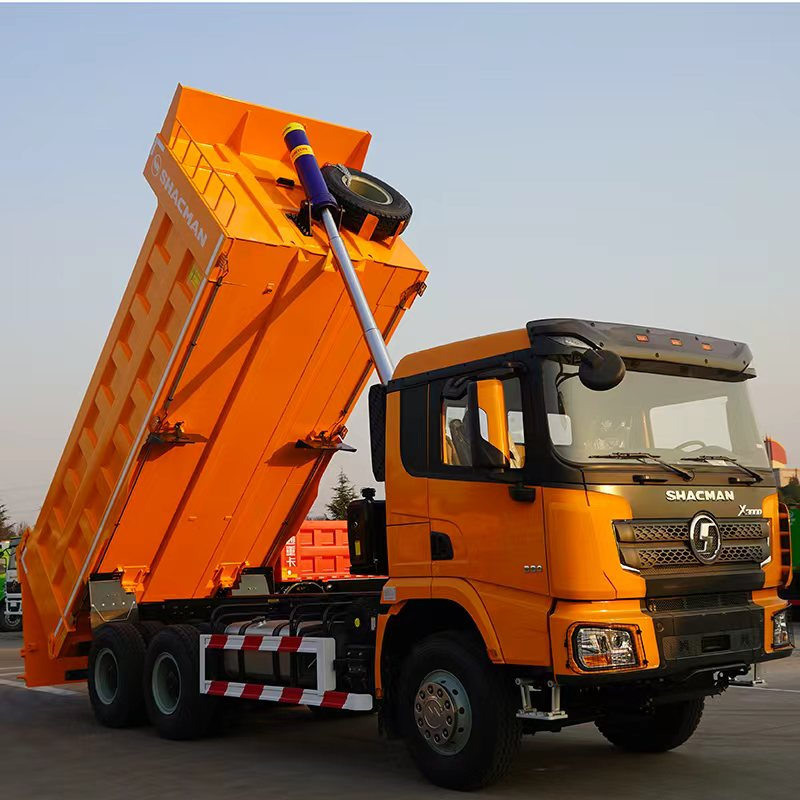
A practical checklist for selecting a SHACMAN X3000 6x4 dump truck in Uzbekistan: route, climate, material, 430 HP reference specs and inspection.
Read guide
Select a SHACMAN X3000 dump truck for Tanzania mining and quarry work using route, material, body, tyres, filtration and support requirements.
Read guide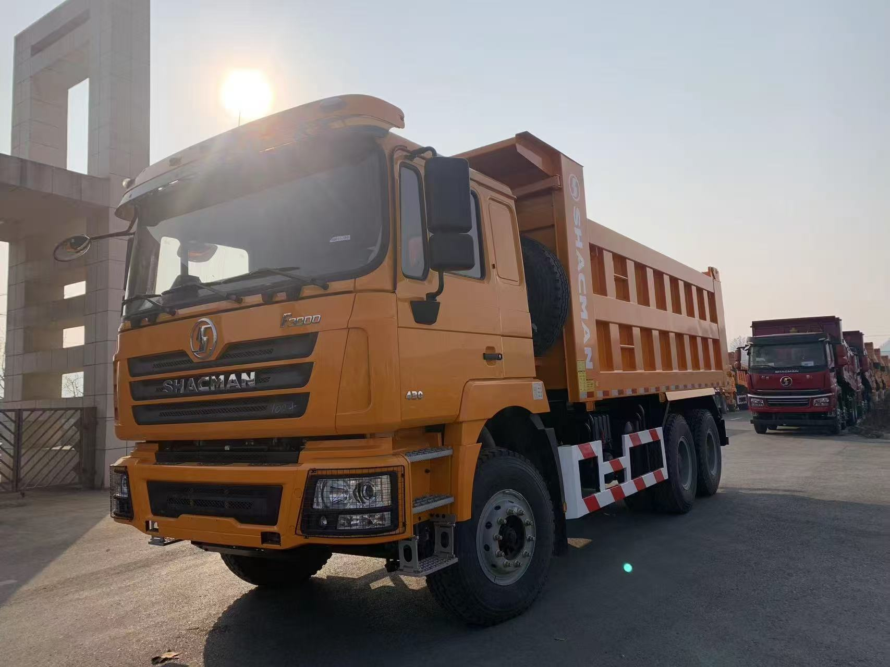
Buyer guide for SHACMAN F3000 dump trucks in Ghana covering quarry routes, material density, body choice, tyres, inspection and quotation details.
Read guide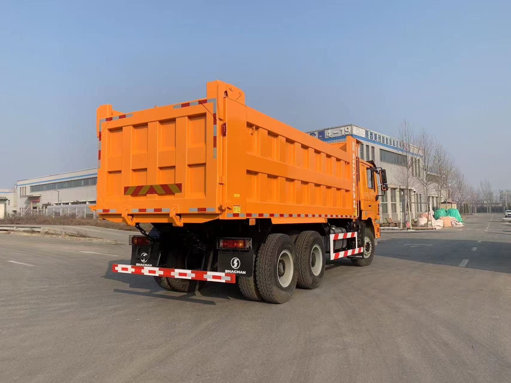
What Nigerian fleet buyers should confirm before ordering a SHACMAN F3000 dump truck: payload, routes, fuel, tyres, cooling, parts and inspection.
Read guideA practical checklist for importing a SHACMAN dump truck to Jamaica: steering, compliance, specification, shipping, inspection and spare parts.
Read guideReview the verified configuration in English, Spanish or Chinese.
View specifications
Compare the four-axle configuration and download its Spanish specification.
View specificationsLearn what to confirm before requesting a technical configuration and quotation.
Read buying guide